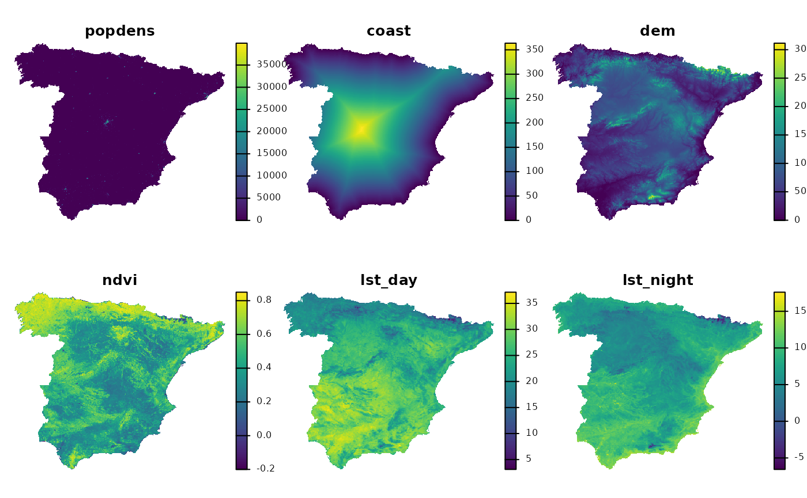

An introduction to patternogram (extended)
Jakub Nowosad
2025-09-28
Source:vignettes/articles/An-introduction-to-patternogram_ext.Rmd
An-introduction-to-patternogram_ext.RmdLet’s start by attaching the necessary packages.
Next, we load two spatial datasets. The first one is a spatial vector
point dataset with annual average air temperature measurements in
Celsius for Spain in 2019. The second one is a raster dataset with
predictors, such as population density (popdens), distance
to the coast (coast), elevation (dem), a
satellite-based Normalized Difference Vegetation Index
(ndvi), and annual average composites of the Land Surface
Temperature product for day (lst_day) and night
(lst_night).
temp_train = read_sf("/vsicurl/https://github.com/Nowosad/IIIRqueR_workshop_materials/raw/refs/heads/main/data/temp_train.gpkg")
plot(temp_train)
predictors = rast("/vsicurl/https://github.com/Nowosad/IIIRqueR_workshop_materials/raw/refs/heads/main/data/predictors.tif")
plot(predictors, axes = FALSE)
Part 1
p_tt = patternogram(temp_train)
#> Warning: The specified sample size is larger than number of points. Using all
#> points.
p_tt
#> # A tibble: 15 × 3
#> np dist dissimilarity
#> * <int> <dbl> <dbl>
#> 1 334 30200 1.72
#> 2 910 90700 2.10
#> 3 1289 151000 2.27
#> 4 1622 211500 2.49
#> 5 1883 272000 2.60
#> 6 2081 332000 2.83
#> 7 1984 392500 3.25
#> 8 1914 453000 3.45
#> 9 1721 513000 3.54
#> 10 1446 573500 3.85
#> 11 1201 634000 4.06
#> 12 986 694500 4.38
#> 13 763 755000 4.00
#> 14 467 815000 3.89
#> 15 215 875500 3.52
plot(p_tt)
p_tt250 = patternogram(temp_train, cutoff = 250000)
#> Warning: The specified sample size is larger than number of points. Using all
#> points.
p_tt250
#> # A tibble: 15 × 3
#> np dist dissimilarity
#> * <int> <dbl> <dbl>
#> 1 37 8350 0.865
#> 2 65 25000 1.39
#> 3 117 41650 1.66
#> 4 205 58350 2.07
#> 5 235 75000 2.13
#> 6 247 91650 2.03
#> 7 257 108500 2.15
#> 8 311 125000 2.09
#> 9 343 141500 2.26
#> 10 366 158500 2.18
#> 11 416 175000 2.53
#> 12 394 191500 2.43
#> 13 458 208500 2.50
#> 14 463 225000 2.42
#> 15 485 241500 2.58
plot(p_tt250)
p_tt_ci = patternogram(temp_train, interval = "confidence")
#> Warning: The specified sample size is larger than number of points. Using all
#> points.
p_tt_ci
#> # A tibble: 15 × 5
#> np dist dissimilarity ci_lower ci_upper
#> * <int> <dbl> <dbl> <dbl> <dbl>
#> 1 334 30200 1.72 1.55 1.91
#> 2 910 90700 2.10 1.99 2.21
#> 3 1289 151000 2.27 2.18 2.35
#> 4 1622 211500 2.49 2.42 2.58
#> 5 1883 272000 2.60 2.52 2.69
#> 6 2081 332000 2.83 2.74 2.93
#> 7 1984 392500 3.25 3.15 3.32
#> 8 1914 453000 3.45 3.33 3.57
#> 9 1721 513000 3.54 3.42 3.64
#> 10 1446 573500 3.85 3.72 3.96
#> 11 1201 634000 4.06 3.91 4.20
#> 12 986 694500 4.38 4.19 4.52
#> 13 763 755000 4.00 3.79 4.21
#> 14 467 815000 3.89 3.71 4.05
#> 15 215 875500 3.52 3.27 3.78
plot(p_tt_ci)
p_tt_ci2 = patternogram(temp_train, interval = "confidence",
interval_opts = list(conf_level = 0.9, n_bootstrap = 250))
#> Warning: The specified sample size is larger than number of points. Using all
#> points.
plot(p_tt_ci2)
p_tt_cloud = patternogram(temp_train, cloud = TRUE)
#> Warning: The specified sample size is larger than number of points. Using all
#> points.
p_tt_cloud
#> # A tibble: 18,816 × 4
#> left right dist dissimilarity
#> * <fct> <fct> <dbl> <dbl>
#> 1 1 2 593411. 0.611
#> 2 1 3 133678. 4.78
#> 3 1 4 257536. 0.832
#> 4 1 5 283439. 1.35
#> 5 1 6 230360. 2.35
#> 6 1 7 270287. 3.71
#> 7 1 8 489869. 4.06
#> 8 1 9 434453. 0.432
#> 9 1 10 538924. 0.182
#> 10 1 11 337312. 0.0831
#> # ℹ 18,806 more rows
plot(p_tt_cloud)Part 2
nx = minmax(predictors)
pr = (predictors - nx[1, ]) / (nx[2, ] - nx[1, ])
p_pr = patternogram(pr)
p_pr
#> # A tibble: 15 × 3
#> np dist dissimilarity
#> * <int> <dbl> <dbl>
#> 1 2943 31700 0.216
#> 2 7477 95200 0.309
#> 3 11092 158500 0.378
#> 4 13270 222000 0.430
#> 5 14672 285500 0.463
#> 6 15094 348500 0.492
#> 7 14939 412000 0.513
#> 8 13316 475500 0.511
#> 9 10817 539000 0.515
#> 10 8014 602500 0.519
#> 11 5779 665500 0.522
#> 12 3719 729000 0.528
#> 13 2056 792500 0.540
#> 14 1010 856000 0.529
#> 15 409 919500 0.432
plot(p_pr)
p_pr_250 = patternogram(pr, cutoff = 250000)
plot(p_pr_250)
p_pr_dist = patternogram(pr, dist_fun = "manhattan")
plot(p_pr_dist)
p_pr_np = patternogram(pr, sample_size = 50)
plot(p_pr_np)
p_pr_2 = c(p_pr, p_pr_np)
p_pr_2
#> # A tibble: 30 × 4
#> np dist dissimilarity id
#> <int> <dbl> <dbl> <chr>
#> 1 2943 31700 0.216 patternogram_1
#> 2 7477 95200 0.309 patternogram_1
#> 3 11092 158500 0.378 patternogram_1
#> 4 13270 222000 0.430 patternogram_1
#> 5 14672 285500 0.463 patternogram_1
#> 6 15094 348500 0.492 patternogram_1
#> 7 14939 412000 0.513 patternogram_1
#> 8 13316 475500 0.511 patternogram_1
#> 9 10817 539000 0.515 patternogram_1
#> 10 8014 602500 0.519 patternogram_1
#> # ℹ 20 more rows
plot(p_pr_2)
p_pr_ci = patternogram(pr, interval = "confidence")
p_pr_ci
#> # A tibble: 15 × 5
#> np dist dissimilarity ci_lower ci_upper
#> * <int> <dbl> <dbl> <dbl> <dbl>
#> 1 2866 31700 0.196 0.192 0.200
#> 2 7275 95200 0.294 0.291 0.297
#> 3 10718 158500 0.364 0.361 0.367
#> 4 13169 222000 0.418 0.415 0.421
#> 5 14386 285500 0.458 0.455 0.460
#> 6 14792 348500 0.496 0.493 0.500
#> 7 14547 412000 0.506 0.502 0.509
#> 8 13058 475500 0.521 0.519 0.524
#> 9 10888 539000 0.513 0.510 0.516
#> 10 8341 602500 0.500 0.497 0.504
#> 11 6662 665500 0.496 0.491 0.499
#> 12 4527 729000 0.477 0.473 0.482
#> 13 2308 792500 0.483 0.476 0.491
#> 14 843 856000 0.474 0.463 0.487
#> 15 283 919500 0.404 0.388 0.420
plot(p_pr_ci)
p_pr_ui = patternogram(pr, interval = "uncertainty",
interval_opts = list(n_montecarlo = 100))
p_pr_ui
#> # A tibble: 15 × 5
#> np dist dissimilarity ui_lower ui_upper
#> * <int> <dbl> <dbl> <dbl> <dbl>
#> 1 2869 31700 0.203 0.191 0.212
#> 2 7605 95200 0.296 0.287 0.308
#> 3 10945 158500 0.368 0.360 0.381
#> 4 13132 222000 0.421 0.409 0.431
#> 5 14374 285500 0.460 0.443 0.480
#> 6 14731 348500 0.492 0.468 0.521
#> 7 14191 412000 0.510 0.485 0.538
#> 8 12872 475500 0.514 0.493 0.533
#> 9 10928 539000 0.510 0.492 0.531
#> 10 8645 602500 0.508 0.489 0.526
#> 11 6488 665500 0.507 0.489 0.526
#> 12 4244 729000 0.499 0.475 0.525
#> 13 2288 792500 0.493 0.465 0.527
#> 14 978 856000 0.495 0.449 0.563
#> 15 363 919500 0.456 0.379 0.556
plot(p_pr_ui)
p_pr_l = patternogram(pr, group = TRUE)
plot(p_pr_l)